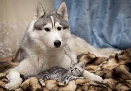

No Animal Suffers
"Every day, countless stray animals roam our streets, facing hunger, danger, and loneliness. But with a simple act of compassion, we can change their fate. By rescuing, fostering, or adopting a stray animal, you're not just saving a life; you're offering hope, love, and a second chance at happiness. Together, let's make our communities safer and more compassionate places for all beings, one stray animal at a time."

